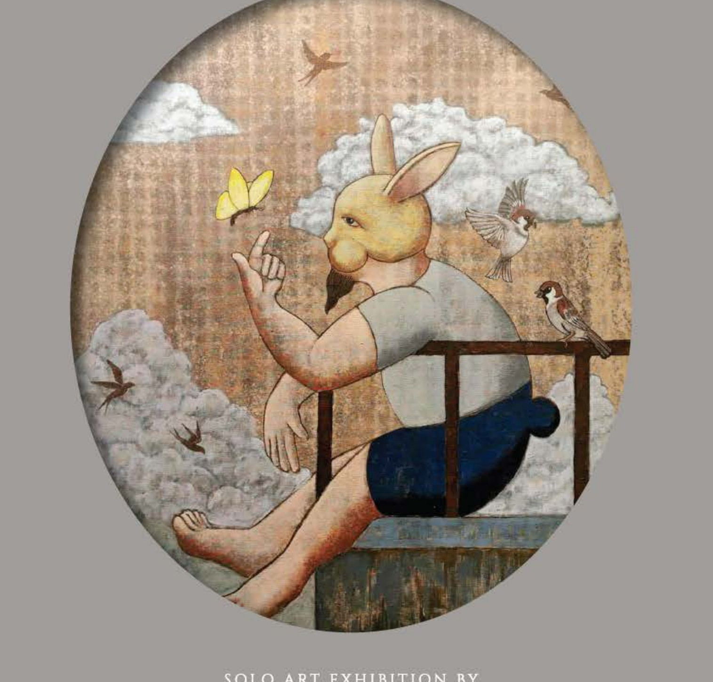

Solo Art Exhibition
HUMAN TRACE
A Story, Told by a Storyteller
Waratsin Poonyasirimongkon
Artist Statement
More than 20 years ago, in a composition class, a professor once questioned a piece of work: “Why does your story matter? Why should the audience care?” That question lingered in my heart ever since.
Ten years later, sitting with another professor at The Drunken Flower Bar, I asked with the raw ambition of youth: “Isn't the ultimate goal of an artist to reach a point of universal recognition?” The professor smiled and replied briefly: “Not at all… none of what you just said matters.”
It took me over a decade to peel back those layers. If I had to answer all those questions today, I would say with absolute honesty: “Neither my story, nor that recognition, matters at all.”
The works surrounding you today are merely the traces of an ordinary human being, recorded at a specific moment in time through canvas and form. I am not here to be the ‘storyteller’ for you. Instead, the duty of these art pieces is to act as tiny mirrors, waiting for your gaze, so that these traces of mine can reflect and retell ‘your own story.’
Welcome to Human Trace.
The Collection
Work
42 paintings and sculptures, spanning storytelling figures, dreamscapes, sacred amulets, and quiet small studies.
The Artist
Waratsin Poonyasirimongkon
Former professional name: Artid Poonyasiri (used in exhibitions and works, 2000–2015)
Waratsin holds a Bachelor of Fine Arts from the Faculty of Fine Arts, Chiang Mai University, and works across contemporary painting, sculpture, and mixed media. His practice began within the student art movements and independent collectives of northern Thailand in the early 2000s, and has since grown into a sustained solo practice rooted in Chiang Mai and Nan.
Solo Exhibitions
- 2026 Human Trace, Chiang Mai Cultural Centre
- 2016–present Solo Exhibition Series, Soodgongdee Gallery, Nan (three editions)
- 2010 “Man & The Moon”, Art Republic Gallery, Bangkok
Group Exhibitions
- 2011 “For Japan: a fund raising event”, BACC, Bangkok
- 2007 “HOOPLA – LOOP”, Art Republic Gallery, Bangkok
- 2000–2006 Early Works & Chiang Mai Art Movements, various venues
All artworks and exhibition records from 2000–2015 were originally exhibited and published under the name “Artid Poonyasiri,” prior to transitioning to the name “Waratsin Poonyasirimongkon” in 2016.
Plan Your Visit
Visit the Exhibition
Where
Chiang Mai Cultural Centre
Chiang Mai, Thailand
Grand Opening
5.30 PM
July 11, 2026
Open to the Public
July 11 – July 30, 2026
8.30 AM – 4.00 PM
Open Days
Wednesday – Sunday
Closed Monday & Tuesday
Inquiries & Reservations
Interested in a piece?
For inquiries, reservations, or purchase details, reach out through any of the channels below.
- Facebook tahgalleryandbar
- Phone 083 576 6022 (Admin)